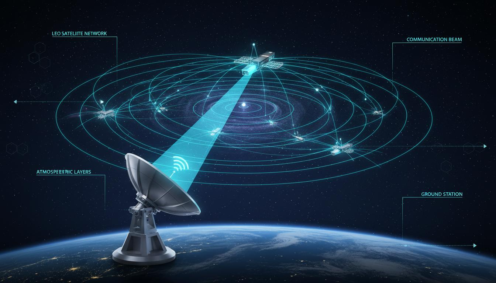
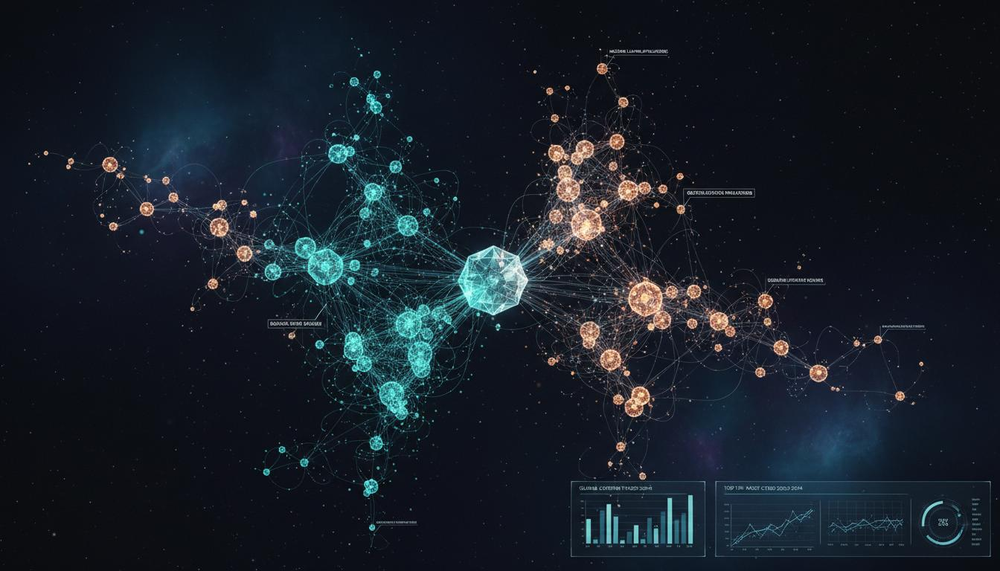
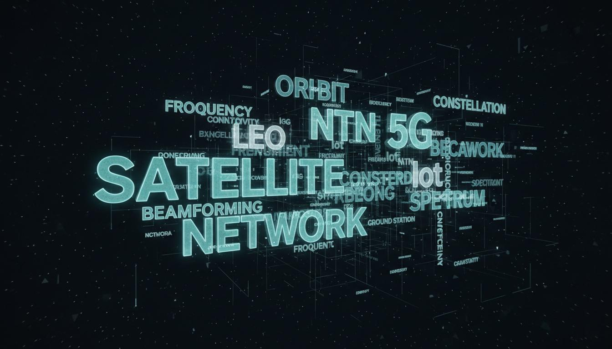

Estado del Arte de las NTN
Síntesis de los hallazgos principales del análisis bibliométrico sobre redes no terrestres.
¿Qué son las Non-Terrestrial Networks?
Las Non-Terrestrial Networks (NTN) representan la nueva frontera de las telecomunicaciones globales, integrando plataformas espaciales —satélites en órbita LEO, MEO y GEO— con estaciones terrestres para extender la cobertura 5G y 6G a cualquier punto del planeta.
El análisis de 1,247 documentos científicos publicados entre 2019 y 2025 revela un campo en expansión acelerada, con un crecimiento anual del 34.2% impulsado por la estandarización 3GPP y el despliegue comercial de constelaciones como Starlink, OneWeb y Kuiper.
Acceso a Componentes
Metodología
Estrategia de búsqueda, criterios de selección y pasos del análisis bibliométrico.
Resultados
Mapa bibliométrico, tendencias temporales y distribución geográfica.
Clústeres
6 agrupaciones temáticas identificadas con términos y oportunidades.
Palabras Clave
10 términos principales con análisis individual y enlaces IEEE.
Mini-Caso Técnico
Calculadora interactiva de link budget y análisis Doppler para escenarios LEO.
Asistente NTN
Chatbot local con respuestas sobre el contenido académico del sitio.
Marco del Proyecto
Glosario Técnico
Mini-Caso Técnico: Escenario LEO
Calcula el presupuesto de enlace y el efecto Doppler para un escenario de comunicación satelital LEO.

Resultados del Enlace
Video de Sustentación
Referencias IEEE
Metodología del Análisis Bibliométrico
Proceso sistemático de recolección, filtrado y análisis de la literatura científica sobre NTN.
Cadena de Búsqueda
Criterios de Inclusión
Criterios de Exclusión
Pasos Metodológicos
Términos Eliminados del Análisis
Resultados del Análisis Bibliométrico
Visualización de las principales métricas y tendencias identificadas en el corpus de 1,247 documentos.
Producción Anual de Documentos
Evolución temporal de publicaciones sobre NTN (2019-2025)
Mapa Bibliométrico
Red de co-ocurrencia de términos y agrupaciones temáticas

Términos Más Frecuentes
Palabras clave con mayor aparición en el corpus analizado
Producción por País
Principales países contribuyentes a la investigación en NTN
Clústeres de Investigación
Seis agrupaciones temáticas identificadas mediante análisis de co-ocurrencia de palabras clave.
Análisis por Palabras Seleccionadas
Exploración de los 10 términos de mayor relevancia en el campo NTN.

Reflexión sobre el Proceso de Investigación
Aprendizajes, desafíos y perspectivas futuras derivadas del análisis bibliométrico.